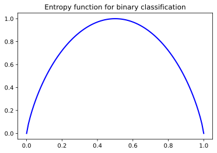

Decision Trees
Jacky Baltes
National Taiwan Normal University
Taipei, Taiwan
jacky.baltes@ntnu.edu.tw

Sample Domain - Sports
- Learn when someone wants to play tennis
- Dataset has six attributes
- Sky, Temp, Humid, Wind, Water, Forecast
- Binary classification problem: Yes/No
| Sky | Temp | Humid | Wind | Water | Forecast | Play |
|---|---|---|---|---|---|---|
| Sunny | Warm | Normal | Strong | Warm | Same | Yes |
| Sunny | Warm | High | Strong | Warm | Same | Yes |
| Rainy | Cold | High | Strong | Warm | Change | No |
| Sunny | Warm | High | Strong | Cool | Change | Yes |
import pandas as pd
from IPython.display import display, HTML
random.seed(20220508)
np.random.seed(20220509)
FlowerAttributes = {
'Size' : [ 'small', 'medium', 'large' ],
'Color' : [ 'red', 'green', 'blue', 'purple', 'other' ],
'Fragrance': [ 'nice', 'none', 'bad' ],
'Thorns' : [ 'yes', 'no' ],
}
def secretClassifyTarget( inst ):
resp = 'no'
if ( ( inst[0] == 'medium' ) and ( inst[2] == 'nice' ) ):
resp = 'yes'
elif ( ( ( inst[0] == 'large' ) or ( inst[0] == 'small' ) ) and ( inst[3] == 'no' ) ):
resp = 'yes'
return resp
done = False
while( not done ):
instances = []
while( len(instances) < 8 ):
inst = []
for k in FlowerAttributes:
inst.append( random.choice( FlowerAttributes[ k ] ) )
if inst not in instances:
instances.append(inst)
target = []
for i in instances:
target.append( secretClassifyTarget( i ) )
if ( 'yes' in target ) and ( 'no' in target ):
done = True
import pandas as pd
from IPython.display import display, HTML
import random
df = pd.DataFrame(instances,
columns=['Size', 'Color', 'Fragrance',
'Thorns' ],
index=[ 'F_{0}'.format(i+1)
for i in range(len(instances)) ] )
df1 = df.assign(Target = target )
| Size | Color | Fragrance | Thorns | Target | |
|---|---|---|---|---|---|
| F_1 | medium | purple | nice | no | yes |
| F_2 | small | purple | nice | yes | no |
| F_3 | small | purple | none | yes | no |
| F_4 | medium | other | bad | no | no |
| F_5 | small | purple | bad | no | yes |
| F_6 | large | green | nice | no | yes |
| F_7 | medium | other | none | yes | no |
| F_8 | large | red | bad | no | yes |
df.describe()
| Size | Color | Fragrance | Thorns | |
|---|---|---|---|---|
| count | 8 | 8 | 8 | 8 |
| unique | 3 | 4 | 3 | 2 |
| top | medium | purple | nice | no |
| freq | 3 | 4 | 3 | 5 |
NInstances = 1
for f in df.columns[:-1]:
n = df.groupby(f)[f].nunique().count()
NInstances = NInstances * n
print(NInstances)
36
Complexity
- Calculate the number of different instances for this domain. Number of Instances is 36
For a simple classification problem (e.g., binary classification, true or false ), how many different concepts can be defined over this domain?
#Concepts = 2 ** #Instances
Decision Tree
This classification hierarchy is called a decision tree
Each leaf node (L1..L9) assigns a classification (Yes/No) to a set of instances
For example: L6 = No implies that [ small, other, *, * ] = No
L6 matches more than one instance/applies to a class of instances: [small, other, bad, yes]
and [small, other, none, no] will all be classied as L6=No
Generalization
In our sample dataset, we do not have any flower that matches [small, other, *, *]
Does this mean that our decision tree (or any other ML model that you may have learned) is good or bad
No, it does not mean that it is a bad model. If you are only interested in the example instances given to your algorithm, then you can just use a database and lookup the correct classification
The most important aspect of a ML system is its ability to use induction to generalize to unseen instances
Since our training data is often noisy, it may even be the case that our model and our training data disagree on an instance. For example F2 is "No", but classified as "Yes" in the decision tree
Generalization
The most important aspect of any machine learning system is its ability to generalize, that is to correctly classify previously unseen instances (i.e., instances not in the training data)
Decision Trees and Generalizations
What kind of trees can generalize well?
Each level in the node, we check one more attribute
Decision Trees
Instances filter throguh the tree starting at the root
At each internal node, we check one attribute and then break the instance set into the different groups, based on the value of the attribute
Every level, the number of instances that we are considering is decreasing
The deeper the tree is, the more specialized the decision is
Assumption: The smaller the tree, the better the tree is at classifying unseen instances
The simplest solution is usually the best one
Decision Trees
Using Occam's razor, we assume that small tree are better than large decision trees
A small tree is less likely to match data by chance, through random selection of training data
The ID3 Algorithm
How do we create small/shallow trees?
Most popular algorithms are based on Ross Quinlan's ID3 algorithm
ID3 algorithm is based on the idea of entropy and Shannon's information theory
Entropy is the amount of bits needed to encode a message based on its probability
Shannon showed that the minimum number of bits needed to encode a message with probability
Entropy Example
a robot on Mars can send back 1 of 4 possible messages. Sending a message costs a lot of power, so you want to send the smallest possible message. How many bits do you need to send back to earth?
Message Probability ----------------------------- Working 0.7 Charging 0.2 Warning 0.08 Error 0.02
A naive approach would calculate the number of necessary bits as log2(4) = 2
However, assuming that the robot has spent 15 years on Mars (e.g., Opportunity 2004 - 2019),
then we will transmit many more Working messages than Error messages
Shannon's Information Theory
If the probabilities are not equal, then a different (variable length) coding scheme is better
The minimum length of the encoding of the message is given by the entropy
\[ ent = \sum_{i} - p_i \cdot log_{2}( p_i ) \]In our example, we need to send only 1.22 bits per message on average. So we save almost 50% of the power
import math
def calcEntropy( pos, neg ):
sum = pos + neg
ent = 0
if ( sum > 0 ):
p = pos/sum
n = neg/sum
if ( p > 0.0 ) and ( n > 0.0 ):
ent = 0.0
for x in [ p, n ]:
ent = ent - x * math.log( x, 2 )
return ent
import matplotlib.pyplot as plt
import numpy as np
import math
x = np.linspace(0, 1, 100)
y = [ calcEntropy(xi, 1-xi) for xi in x ]
fig = plt.figure()
ax = fig.add_subplot( 1, 1, 1 )
ax.set_title('Entropy function for binary classification')
ax.plot( x, y, 'b-', linewidth = 2 )
ent1 = addJBFigure("ent1", 0, 0, fig )
plt.close()
Entropy

Entropy in Machine Learning
Calculate the entropy of our flower dataset. Entropy with respect to the target classification
How uncertain is the classification of an instance if you just guess without any other information about the target
Entropy( 4: No, 4:Yes ) = 1.0. Maximal confusion
ID3 Algorithm
We start with the set of training instances F1 .. F8.
We must select one attribute and then use this attribute to divide the instances into different groups
Perfect attribute to check: after attribute test the entropy of the resulting groups is 0
Example: Attribute Size
If we choose attribute Size, then our instance set F1 .. F8 will be broken down into 3 sets (Small, Medium, Large)
Attribute Size:
Label Instances Classification Entropy
Small (F2, F3, F5) Yes: 1, No: 2 0.91
Medium (F1, F4, F7) Yes: 1, No: 2 0.91
Large (F6,F8) Yes: 2, No: 0 0.00
Entropy after Split: 0.91 + 0.91 + 0 = 1.82
Example: Attribute Color
Instance set F1 .. F8 will be broken down into 4 values: purple, other, red, green
Attribute Color:
Label Instances Classification Entropy
purple F1, F2, F3, F5 Yes: 2 No: 2 1.00
other F4, F7 Yes: 0 No: 2 0.00
green F6 Yes: 1 No: 0 0.00
red F8 Yes: 1 No: 0 0.00
Entropy after Split: 1 + 0 + 0 + 0 = 1
Example: Attribute Fragrance
Instance set F1 .. F8 will be broken down into 3 values: nice, none, bad
Attribute Color:
Label Instances Classification Entropy
nice F1, F2, F6 Yes: 2 No: 1 0.91
none F3, F7 Yes: 0 No: 2 0.00
bad F4, F5 Yes: 2 No: 1 0.91
Entropy after Split: 0.91 + 0 + 0.91 = 1.82
Example: Attribute Thorns
Instance set F1 .. F8 will be broken down into 3 values: yes, no
Attribute Thorns:
Label Instances Classification Entropy
yes F2,F3,F7 Yes: 0 No: 3 0.00
no F1,F4,F5,F6,F8 Yes: 4 No: 1 0.00
Entropy after Split: 0 + 0.72 = 0.72
ID3 algorithm will choose attribute "Thorns" because it selects the attribute which results in the lowest entropy (almost)
The lower the entropy/uncertainty in the instance set, the higher the chance that we can find another attribute to split the resulting instance sets
ID3 Algorithm
Information gain heuristic to select an attribute to split the instance set
Information gain
\[
IG( I, a ) = ent(I) - \sum_{s} \frac{|I[a=s]|}{|I|} ent( I[a = s] )
\]
ID3 will select an attribute based on the information gain heuristic: sum of entropies for each
subset weighted by the size of the resulting subset
Information gain heuristic to select an attribute to split the instance set
Information gain
\[ IG( I, a ) = ent(I) - \sum_{s} \frac{|I[a=s]|}{|I|} ent( I[a = s] ) \]ID3 will select an attribute based on the information gain heuristic: sum of entropies for each subset weighted by the size of the resulting subset
import pandas as pd
from IPython.display import display, HTML
import random
FlowerAttributes = {
'Size' : [ 'small', 'medium', 'large' ],
'Color' : [ 'red', 'green', 'blue', 'purple', 'other' ],
'Fragrance': [ 'nice', 'none', 'bad' ],
'Thorns' : [ 'yes', 'no' ],
}
def secretClassifyTarget( inst ):
resp = 'no'
if ( ( inst[0] == 'medium' ) and ( inst[2] == 'nice' ) ):
resp = 'yes'
elif ( ( ( inst[0] == 'large' ) or ( inst[0] == 'small' ) ) and ( inst[3] == 'no' ) ):
resp = 'yes'
return resp
done = False
while( not done ):
instances = []
while( len(instances) < 10 ):
inst = []
for k in FlowerAttributes:
inst.append( random.choice( FlowerAttributes[ k ] ) )
if inst not in instances:
instances.append(inst)
target = []
for i in instances:
target.append( secretClassifyTarget( i ) )
if ( 'yes' in target ) and ( 'no' in target ):
done = True
df = pd.DataFrame(instances,
columns=['Size', 'Color', 'Fragrance',
'Thorns' ],
index=[ 'F_{0}'.format(i+1)
for i in range(len(instances)) ] )
df1 = df.assign(Target = target )
| Size | Color | Fragrance | Thorns | Target | |
|---|---|---|---|---|---|
| F_1 | large | other | nice | no | yes |
| F_2 | small | red | nice | yes | no |
| F_3 | small | blue | nice | no | yes |
| F_4 | medium | other | nice | no | yes |
| F_5 | medium | red | bad | no | no |
| F_6 | large | purple | bad | no | yes |
| F_7 | large | red | bad | yes | no |
| F_8 | small | red | none | yes | no |
| F_9 | large | blue | bad | yes | no |
| F_10 | small | other | nice | yes | no |
Target: Yes 4 No 6 Attribute Size Value small pos 1 neg 3 Entropy 0.81 Size 0.4 Attribute Size Value medium pos 1 neg 1 Entropy 1.00 Size 0.2 Attribute Size Value large pos 2 neg 2 Entropy 1.00 Size 0.4 Attribute Size Information Gain 0.04643934467101546 Attribute Color Value red pos 0 neg 4 Entropy 0.00 Size 0.4 Attribute Color Value green pos 0 neg 0 Entropy 0.00 Size 0.0 Attribute Color Value blue pos 1 neg 1 Entropy 1.00 Size 0.2 Attribute Color Value purple pos 1 neg 0 Entropy 0.00 Size 0.1 Attribute Color Value other pos 2 neg 1 Entropy 0.92 Size 0.3 Attribute Color Information Gain 0.4954618442383218 Attribute Fragrance Value nice pos 3 neg 2 Entropy 0.97 Size 0.5 Attribute Fragrance Value none pos 0 neg 1 Entropy 0.00 Size 0.1 Attribute Fragrance Value bad pos 1 neg 3 Entropy 0.81 Size 0.4 Attribute Fragrance Information Gain 0.16096404744368115 Attribute Thorns Value yes pos 0 neg 5 Entropy 0.00 Size 0.5 Attribute Thorns Value no pos 4 neg 1 Entropy 0.72 Size 0.5 Attribute Thorns Information Gain 0.6099865470109874
Extensions of ID3
ID3 can learn arbitrary functions. The algorithm is complete
Maintains a single hypothesis that is expanded recusrsively. No benefit for an active learner
Example: Wordle game. The object of the game is to guess a word. This is impossible to solve for a passive learner
In Wordl you have a chance since you can be an active learner
No backtracking (Greedy search). Chance will fall into a local minimum. Impossible to recover from sub-optimal splits
Statistics based approch. Uses all the training data available. Robust to noisy data
Extensions of ID3
Easy to convert the tree into a set of rules. if size == medium and fragrance == no then yes
Extensions of ID3 to continuous valued attributes by guessing by generating splits in continuous data
Extensions that deal with attributes that have many values. Gainratio